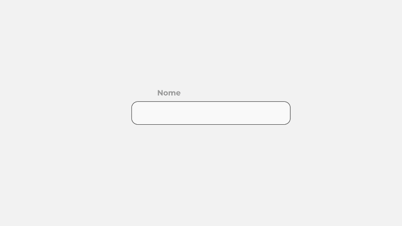

Canais integrados
Organize seu atendimento de forma integrada
Centralize e organize as interações de vários canais, otimize a triagem e reduza o volume de atendimentos, proporcionando mais eficiência à sua equipe.
Fale com um especialistaCentralize e automatize o atendimento no WhatsApp com a Cxpress. Transforme conversas em resultados com uma plataforma oficial do WhatsApp, completa para gestão, triagem e automação do atendimento.

Aumento de demandas resolvidas por hora.*
Redução do tempo médio de resolução via chat.*
Redução do desgaste dos atendentes com alto volume de solicitações.
Aumento da produtividade com IA generativa.**
*Resultados obtidos por clientes da Cxpress no atendimento através de redes sociais, com base no relatório interno Concierge de 2025. Os resultados podem variar segundo a operação.
Mais de 800 clientes confiam em nós


Veja como empresas já estão otimizando o atendimento no WhatsApp com o chatbot de IA da Cxpress.
Centralize e profissionalize sua comunicação. A Cxpress é a ferramenta de atendimento no WhatsApp definitiva para escalar seu suporte e vendas com a API Oficial.
Agente Inteligente para respostas automáticas: atendimento 24/7 sem filas, reduzindo o tempo de espera.
Triagem automática com IA e direcionamento automático para vendas, suporte ou financeiro, com um fluxo de conversa fluido e inteligente.
Relatórios e métricas de desempenho, histórico completo e auditável, tags e tickets organizados por prioridade.
Canais integrados
Centralize e organize as interações de vários canais, otimize a triagem e reduza o volume de atendimentos, proporcionando mais eficiência à sua equipe.
Fale com um especialista
Inteligência artificial 24/7
Amplie seu atendimento para 24/7 com Inteligência Artificial que responde ao primeiro contato de visitantes e clientes usando linguagem natural.
Fale com um especialista
Cadastro único
Tenha uma visão completa e integrada do seu cliente, centralizando interações de diferentes canais em um único histórico.
Fale com um especialista
Tickets
Distribua tickets de atendimento automaticamente ou manualmente para setores e agentes específicos, simplificando seus processos.
Fale com um especialistaDashboards
Deixe as planilhas para trás! Transforme suas estatísticas de atendimento em painéis intuitivos.
Fale com um especialista
São 23h14 e a cliente quer mudar o endereço de entrega. O Agente Inteligente responde na hora, pede o número do pedido e passa a conversa para o time certo, com tudo anotado.
A Cxpress é uma plataforma na nuvem que unifica e automatiza os canais de atendimento da sua empresa. WhatsApp, Redes Sociais, E-mail e Telefone juntos oferecem uma visão única e simplificada da interação com o cliente, desde o primeiro contato até a resolução do caso. O uso da Inteligência Artificial da Cxpress para automação das primeiras interações em linguagem natural e a gestão de filas otimizam a produtividade das equipes de atendimento.
Centralize seu atendimento, utilize a API Oficial do WhatsApp, organize sua equipe e automatize interações com Inteligência Artificial.
Conheça a Cxpress e descubra como profissionalizar o atendimento da sua empresa pelo WhatsApp com um chatbot inteligente.
Agende uma demonstração gratuita da plataformaÉ um Agente Inteligente que atende o primeiro contato do cliente em linguagem natural, realiza triagens e direciona a conversa para o setor certo, tudo dentro da API Oficial do WhatsApp.
Sim. O Agente Inteligente responde a qualquer horário, reduzindo filas de espera e garantindo que nenhum cliente fique sem resposta fora do horário comercial.
Não. A configuração é feita de forma consultiva com a equipe da Cxpress, que ajuda a estruturar os fluxos de triagem e direcionamento de acordo com a operação do seu negócio.
Não. O chatbot automatiza as primeiras interações e a triagem, mas encaminha o cliente para um atendente humano sempre que a conversa exigir um atendimento mais específico.
Todas as conversas ficam centralizadas na mesma plataforma, com histórico completo, filas e tickets organizados, para que a equipe continue o atendimento sem perder contexto.
Preencha os dados e continue a conversa com um especialista no WhatsApp.
Pedido enviado. Abrimos a conversa com um especialista numa nova aba. Se ela não abriu, toque aqui.
Carregando o formulário…